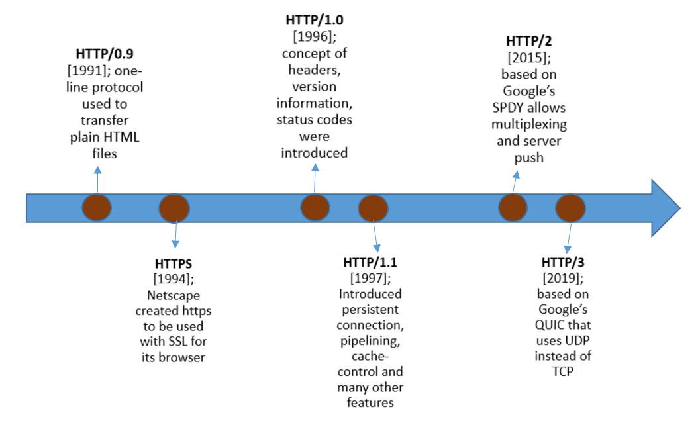

Short for Hypertext Transfer Protocol, HTTP is a set of standards that allow
users of the World Wide Web to exchange information found on web pages.
When accessing any web page entering http:// in front of the address tells the browser to communicate over
HTTP.
It is an application layer protocol which runs on top of TCP/IP and it becomes the foundation of any
data exchange in the World Wide Web.
HTTP has 4 stable versions – HTTP/0.9, HTTP/1.0, HTTP/1.1 and HTTP/2.
HTTP/3 was introduced in July, 2021 and already 2/3rd's of web browsers support it.

The key differences HTTP/2 has to HTTP/1.x are as follows:
- It is binary, instead of textual
- It is fully multiplexed, instead of ordered and blocking
- It can use one connection for parallelism
- It uses header compression to reduce overhead
- It allows Server Pushing to add responses proactively into the Browser cache.
Let's discuss on each of these topics below,
Binary Protocol- HTTP1.x uses text-based commands to complete HTTP requests. If you were to view one of these requests they would be perfectly readable (to a system admin at least).
- HTTP2, on the other hand, uses binary commands (1s and 0s) to complete HTTP requests. It needs to be converted back from binary to read the request. This conversion to Binary takes place in the Binary Framing Layer, so only binary commands are transmitted over the network.
Prioritization refers to the order in which pieces of content are loaded. It affects a webpage's load time. For example, certain resources, like large JavaScript files, may block the rest of the page from loading if they have to load first. More of the page can load at once if these render-blocking resources load last.
- HTTP/2 offers a feature called weighted prioritization. This allows developers to decide which page resources will load first, every time.
- This was not possible With HTTP/1.1, this was easy, as head-of-line blocking made it simple to load various assets in the correct order.
- With HTTP/1.1 a new TCP connection has to be provided for every asset requested, which if you have a page with over 100 requests can be time-consuming.
- HTTP/2 uses a more advanced compression method called HPACK and sends all the headers in a single connection utilizing compression that eliminates redundant information in HTTP header packets.
- In HTTP/1.1 a server only serves content to a client device if the client asks for it. However, this approach is not always practical for modern webpages, which often involve several dozen separate resources that the client must request
- HTTP/2 solves this problem by allowing a server to "push" content to a client before the client asks for it. The server also sends a message letting the client know what pushed content to expect